소음진동산업기사 (2019-04-27 기출문제)
1과목: 소음진동개론
1. 다음 중 항공기 소음평가와 가장 관계가 적은 것은?
- WECPNL
- NRN
- NEF
- NNI
(정답률: 알수없음)

2. 수평진동의 경우, 사람에게 가장 민감한 주파수 범위는? (단, 등감각곡선 기준)
- 1~2Hz
- 4~8Hz
- 10~15Hz
- 15~20Hz
(정답률: 알수없음)
3. 소음공해에 따른 인감 감수성의 일반적인 설명으로 가장 거리가 먼 것은?
- 건강한 사람보다 임산부나 환자가 더 많은 영향을 받는 편이다.
- 남성보다 여성이 소음에 대해 더 민감한 편이다.
- 노동하고 있는 상태보다 휴식을 취하거나 취침을 하고 있을 때 감수성이 높은 편이다.
- 젊은이보다 노인이 소음에 대해 더 민감한 편이다.
(정답률: 알수없음)
4. 음향파워가 0.5W일 때 PWL은?
- 81dB
- 101dB
- 117dB
- 234dB
(정답률: 알수없음)
5. 노인성 난청에 있어서 청력손실이 일어나기 시작하는 주파수영역으로 가장 적합한 것은?
- 500Hz
- 1000Hz
- 4000Hz
- 6000Hz
(정답률: 알수없음)
6. 음의 세기레벨이 80dB에서 83dB로 증가하면 음의 세기는 몇 % 증가하는가?
- 약 100%
- 약 130%
- 약 200%
- 약 300%
(정답률: 알수없음)
7. 투과손실이 25dB인 벽체의 투과율은?
- 3.162×10-2
- 3.162×10-3
- 3.162×10-5
- 3.162×10-7
(정답률: 알수없음)
8. “진동의 역치”를 가장 잘 표현한 것은?
- 인간이 견딜 수 있는 최소 진동레벨값
- 인간이 견딜 수 있는 최대 진동레벨값
- 진동을 겨우 느낄 수 있는 진동레벨값
- 진동을 최대로 느낄 수 있는 진동레벨값
(정답률: 알수없음)
9. 기온이 20℃인 거실에 걸린 기계추가 100Hz로 단진동할 때, 시계추에 의해 발생되는 음파의 파장은?
- 1.25m
- 2.34m
- 3.43m
- 4.52m
(정답률: 알수없음)
10. 40phon의 소리는 20phon의 소리의 몇 배로 크게 들리는가?
- 1배
- 2배
- 3배
- 4배
(정답률: 알수없음)
11. 진동수가 약간 다른 두 음을 동시에 듣게 되면 합성된 음의 크기가 오르내린다. 이 현상을 무엇이라고 하는가?
- Doppler
- Resonance
- Diffraction
- Beat
(정답률: 알수없음)
12. 음원에서 모든 방향으로 동일한 에너지를 방출할 때 발생하는 파를 무엇이라고 하는가?
- 평면파
- 발산파
- 초음파
- 구면파
(정답률: 알수없음)
13. 기상조건이 공기흡음에 의해 일어나는 감쇠치에 미치는 일반적인 영향을 가장 알맞게 설명한 것은? (단, 바람은 고려하지 않음)
- 주파수는 작을수록, 기온이 높을수록, 습도가 높을수록 감쇠치가 커진다.
- 주파수는 커질수록, 기온이 낮을수록, 습도가 낮을수록 감쇠치가 커진다.
- 주파수는 작을수록, 기온이 낮을수록, 습도가 높을수록 감쇠치가 커진다.
- 주파수는 커질수록, 기온이 높을수록, 습도가 낮을수록 감쇠치가 커진다.
(정답률: 알수없음)
14. 음파의 회절현상에 관한 설명 중 옳지 않은 것은?
- 음의 회절은 파장과 장애물의 크기에 따라 다르다.
- 물체의 틈구멍이 작을수록 소리는 잘 회절된다.
- 파장이 짧을수록 잘 회절된다.
- 소리의 주파수는 파장에 반비례하므로 낮은 주파수는 고주파음에 비하여 회절하기가 쉽다.
(정답률: 알수없음)
15. 송풍기의 날개가 5개 달려 있고, 600rpm으로 가동한다고 할 때, 이 송풍기로부터 나오는 소음의 기본 주파수(Hz)는?
- 10Hz
- 50Hz
- 250Hz
- 500Hz
(정답률: 알수없음)
16. 귀의 기능에 관한 설명 중 옳지 않은 것은?
- 내이의 난원창은 이소골의 진동을 와우각 중의 림프액에 전달하는 진동판의 역할을 한다.
- 음의 고저는 와우각내에서 자극받는 섬모의 위치에 따라 결정된다.
- 외이의 외이도는 일종의 공명기로 음을 증폭한다.
- 중이의 음의 전달매질은 기체이다.
(정답률: 알수없음)
17. 소음이 작업능률에 미치는 일반적인 영향으로 가장 거리가 먼 것은?
- 소음은 작업의 정밀도의 저하보다는 총 작업량을 저하시키기 쉽다.
- 1000~2000Hz 이상의 고주파역 소음은 저주파역 소음보다 작업방해를 크게 야기시킨다.
- 복잡한 작업은 단순작업보다 소음에 의해 나쁜 영향을 받기 쉽다.
- 특정음이 없는 일정소음이 90dB(A)를 초과하지 않을 때 작업을 방해하지 않는 것으로 보인다.
(정답률: 알수없음)
18. 기온이 20℃, 음압실효치가 0.35N/m2일 때 평균 음에너지 밀도는?
- 8.6×10-6J/m3
- 8.6×10-7J/m3
- 8.6×10-8J/m3
- 8.6×10-9J/m3
(정답률: 알수없음)
19. 지반을 전파하는 파에 관한 설명으로 옳지 않은 것은?
- 계측되는 진동은 주로 표면파인 R파로 알려져 있다.
- P파는 역 2승 법칙으로 대략 감쇠된다.
- R파는 역 2승 법칙으로 대략 감쇠된다.
- S파는 역 2승 법칙으로 대략 감쇠된다.
(정답률: 알수없음)
20. 초저주파음(Infra sound)에 관한 설명으로 옳지 않은 것은?
- 자연음원으로 해변에서 밀려드는 파도, 천둥, 회오리바람 등이 그 예이다.
- 인공음원으로는 온ㆍ냉방 시스템, 제트비행기, 점화될 때 우주선에서 발생하는 소리 등이 그 예이다.
- 20000Hz보다 낮은 주파수의 음을 말한다.
- 초저주파음을 집중시키면 매우 큰 에너지가 방출되므로 그 통로에 놓인 건물이나 사람도 파괴할 수 있다.
(정답률: 알수없음)
2과목: 소음진동 공정시험 기준
21. 배출허용기준 중 진동의 일반적인 측정조건으로 거리가 먼 것은?
- 진동픽업의 설치장소는 옥외지표를 원칙으로 한다.
- 진동픽업의 설치장소는 완충물이 충분하게 확보된 장소로 한다.
- 진동픽업의 설치장소는 경사 또는 요철이 없는 장소로 한다.
- 진동픽업의 설치장소는 수평면을 충분히 확보할 수 있는 장소로 한다.
(정답률: 알수없음)
22. 다음은 교정장치에 관한 성능기준이다. ()안에 가장 적합한 것은?
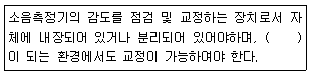
- 20dB(A) 이상
- 50dB(A) 이상
- 60dB(A) 이상
- 80dB(A) 이상
(정답률: 알수없음)
23. 철도진동관리기준 측정방법에 관한 설명으로 옳지 않은 것은?
- 요일별로 진동 변동이 적은 평일(월요일부터 금요일 사이)에 당해지역의 철도진동을 측정하여야 한다.
- 기상조건, 열차의 운행횟수 및 속도 등을 고려하여 당해지역의 1시간 평균 철도 통행량 이상인 시간대에 측정한다.
- 열차통과시마다 최고진동레벨이 배경진동레벨보다 최소 10dB 이상 큰 것에 한하여 연속 10개 열차(상하행 포함) 이상을 대상으로 최고진동레벨을 측정ㆍ기록한다.
- 열차의 운행횟수가 밤ㆍ낮 시간대별로 1일 10회 미만인 경우에는 측정열차수를 줄여 그 중 중앙값 이상을 산술평균한 값을 철도진동레벨로 할 수 있다.
(정답률: 알수없음)
24. 소음의 배출허용기준 측정 시 측정지점에 2m 높이의 담이 있어 방해를 받을 경우, 측정점으로 가장 적합한 곳은? (단, 기타조건은 제외)
- 장애물로부터 소음원 방향으로 0.5m 떨어진 지점
- 장애물로부터 소음원 방향으로 2m 떨어진 지점
- 장애물로부터 소음원 방향으로 5m 떨어진 지점
- 장애물로부터 소음원 방향으로 10m 떨어진 지점
(정답률: 알수없음)
25. 다음은 진동레벨계의 기본구성 중 무엇의 성능기준에 관한 설명인가?
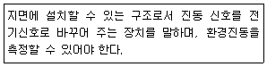
- 레벨레인지 변환기(attenuator)
- 진동픽업(pick-up)
- 감각보정회로(weighting networks)
- 교정장치(calibration network calibrator)
(정답률: 알수없음)
26. 공장을 가능한 최대출력으로 가동시킨 상태에서 측정한 소음도가 73dB(A)이고, 가동을 끄고 측정한 소음도가 65dB(A)일 때 대상소음도는 약 얼마인가?
- 73dB(A)
- 72dB(A)
- 70dB(A)
- 68dB(A)
(정답률: 알수없음)
27. 규제기준 중 발파소음 측정방법으로 가장 거리가 먼 것은?
- 소음계와 소음도기록기를 연결하여 측정ㆍ기록하는 것을 원칙으로 하되, 소음계만으로 측정한 경우에는 최고소음도가 고정(hold)되는 것에 한한다.
- 소음계의 동특성을 원칙적으로 빠름(fast)모드를 측정하여야 한다.
- 측정시간 및 측정지점수는 작업일지 등을 참조하여 소음진동관리법규에서 구분하는 각 시간대 중에서 평균발파소음이 예상되는 시각의 발파소음을 3지점이상에서 측정한 값을 기준으로 한다.
- 측정소음도는 발파소음이 지속되는 기간동안에 측정하여야 한다.
(정답률: 알수없음)
28. 소음계의 성능기준 중 레벨레인지 변환기의 전환오차는 얼마 이내이어야 하는가?
- 0.1dB
- 0.5dB
- 1.0dB
- 5dB
(정답률: 알수없음)
29. 다음은 소음계 구조별 기능을 설명한 것이다. 옳지 않은 것은?
- 마이크로폰은 음향에너지를 전기에너지로 변환한다.
- 출력단자는 기록기 등에 소음신호를 보내는 단자이다.
- 레벨레인지 변환기는 15dB 간격으로 표시되어야 한다.
- 디지털형 지시계기는 소수점 한자리까지 표시되어야 한다.
(정답률: 알수없음)
30. 소음ㆍ진동공정시험기준상 “정상소음”의 정의로 옳은 것은?
- 시간에 따라 소음도 변화폭이 큰 소음
- 계기나 기록지 상에서 판독한 소음도 실효치(rms값)
- 배경소음외에 측정하고자 하는 특징의 소음
- 시간적으로 변동하지 아니하거나 또는 변동폭이 작은 소음
(정답률: 알수없음)
31. 배출허용기준 중 소음측정방법으로 옳지 않은 것은?
- 소음계의 동특성은 원칙적으로 빠름(fast)모드로 하여 측정하여야 한다.
- 풍속이 2m/s 이상일 때에는 반드시 마이크로폰에 방풍망을 부착하여야 하며, 풍속이 5m/s를 초과할 때에는 측정하여서는 안 된다.
- 피해가 예상되는 적절한 측정시각에 2지점이상의 측정지점수를 선정ㆍ측정하여 그 중 가장 높은 소음도를 측정소음도로 한다.
- 공장의 부지경게선(아파트형 공장의 경우에는 공장건물의 부지경계선) 중 피해가 우려되는 장소로서 소음도가 높을 것으로 예상되는 지점의 지면 위 5~10m 높이로 한다.
(정답률: 알수없음)
32. 누적도수곡선에서 L10 진동레벨은 몇 %의 횡선이 누적도곡선과 만나는 교점에서 수선을 구어 횡축과 만나는 점의 진동레벨을 말하는가?
- 50%
- 80%
- 90%
- 100%
(정답률: 알수없음)
33. 다음 중 발파진동 평가 시 시간대별 보정발파 횟수(N)에 따른 보정량으로 옳은 것은? (단, N＞1)
- +100 log N
- +20 log(N)2
- +10 log(N)2
- +10 log N
(정답률: 알수없음)
34. 규제기준 중 생활진동 측정 시 디지털 진동자동분석계를 사용할 경우 측정진동레벨로 정하는 기준으로 옳은 것은?
- 샘플주기를 1초 이내에서 결정하고 5분 이상 측정하여 자동 연산ㆍ기록한 80% 범위의 상단치인 L10값
- 샘플주기를 0.1초 이내에서 결정하고 5분 이상 측정하여 자동 연산ㆍ기록한 80% 범위의 상단치인 L10값
- 샘플주기를 1초 이내에서 결정하고 5분 이상 측정하여 자동 연산ㆍ기록한 90% 범위의 상단치인 L10값
- 샘플주기를 0.1초 이내에서 결정하고 5분 이상 측정하여 자동 연산ㆍ기록한 90% 범위의 상단치인 L10값
(정답률: 알수없음)
35. 7일간 항공기소음의 일별 WECPNL이 80, 82, 85, 78, 68, 74, 88인 경우 7일간의 평균 WECPNL은?
- 79
- 80
- 83
- 75
(정답률: 알수없음)
36. 생활소음 규제기준 측정시 측정시간 및 측정지점수에 따른 측정소음도 선정기준으로 옳은 것은?
- 피해가 예상되는 적절한 측정시각에 2지점이상의 측정지점수를 선정ㆍ측정하여 그 중 가장 높은 소음도를 측정소음도로 한다.
- 피해가 예상되는 적절한 측정시각에 4지점이상의 측정지점수를 선정 각각 4회이상 측정하여 각 지점에서 산술평균한 소음도 중 가장 높은 소음도를 측정소음도로 한다.
- 낮시간대에는 당해지역 소음을 대표할 수 있도록 측정지점수를 충분히 결정하고, 각 측정지점에서 2시간 이상 간격으로 4회 이상 측정하여 산술평균한 값을 측정소음도로 한다.
- 각 시간대별로 최대소음이 예상되는 시각에 1지점 이상의 측정지점수를 선정하여 측정소음도로 한다.
(정답률: 알수없음)
37. 도로변지역의 범위에 해당하지 않는 것은?
- 2차선은 도로단으로부터 20m 이내지역
- 4차선은 도로단으로부터 40m 이내지역
- 자동차 전용도로는 도로단으로부터 150mm 이내지역
- 고속도로는 도로단으로부터 200m 이내지역
(정답률: 알수없음)
38. 발파소음 측정자료 평가서 서식 중 “측정환경”란에 기재되어야 하는 항목으로 가장 거리가 먼 것은?
- 반사음의 영향
- 풍속
- 풍향
- 진동, 전자장의 영향
(정답률: 알수없음)
39. 1일 동안 평균 최고소음도가 92dB(A), 1일간 항공기의 등가통과횟수가 480회 인 경우 1일 단위 WECPNL은?
- 92dB
- 90dB
- 88dB
- 86dB
(정답률: 알수없음)
40. 소음진동공정시험기준에서 다음의 내용으로 정의되는 용어는?
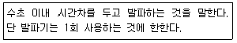
- 지반발파
- 자연발파
- 간격발파
- 시차발파
(정답률: 알수없음)
3과목: 소음진동방지기술
41. 자유공간내에서 소음의 거리감쇠에 대한 다음 설명 중 옳지 않은 것은? (단, 선음원은 무한 길이 선음원으로 본다.)
- 점음원인 경우 거리가 2배로 되면 약 6dB 감쇠한다.
- 점음원인 경우 거리가 10배로 되면 약 20dB 감쇠한다.
- 선음원인 경우 거리가 10배로 되면 약 10dB 감쇠한다.
- 선음원인 경우 거리가 5배로 되면 약 5dB 감쇠한다.
(정답률: 알수없음)
42. 고유진동수에 대한 강제진동수의 비가 2.5일 경우 진동전달률은? (단, 비감쇠)
- 0.14
- 0.19
- 0.24
- 0.29
(정답률: 알수없음)
43. 다음 중 소음문제 해경을 위한 소음대책의 일반적인 순서의 흐름으로 가장 적합한 것은?
- 귀로판단-계기에 의한 측정-규제기준 확인-적정 방지기술 선정-시공 및 재평가
- 귀로판단-계기에 의한 측정-적정 방지기술 선정-규제기준 확인-시공 및 재평가
- 계기에 의한 측정-적정 방지기술 선정-대책의 목표치 설정-귀로판단-시공 및 재평가
- 계기에 의한 측정-대책의 목표치 설정-적정방지기술 선정-귀로 판단-시공 및 재평가
(정답률: 알수없음)
44. 중량 25N, 스프링 정수 20N/cm, 감쇠계수 0.1Nㆍs/cm인 자유진동계의 감쇠비는?
- 0.⑤
- 0.06
- 0.07
- 0.9
(정답률: 알수없음)
45. 바닥면적이 5m×5m이고, 높이가 3m인 방이 있다. 바닥 및 천장의 흡음율이 0.3일 때 벽체에 흡음재를 부착하여 실내의 평균흡음율을 0.55 이상으로 하고자 한다면 벽체 흡음제의 흡음율은 얼마 정도가 되어야 하는가?
- 0.52
- 0.59
- 0.67
- 0.76
(정답률: 알수없음)
46. 고무절연기 위에 설치된 기계가 90rpm에서 20%의 전단률을 가진다면 평형상태에서 절연기의 정적처짐은 얼마인가?
- 0.45cm
- 0.56cm
- 0.66cm
- 0.74cm
(정답률: 알수없음)
47. 점성감쇠진동에서 처음 진폭을 Xo라 하고, m 사이클 후의 진폭을 Xm이라고 할 때 대수감쇠율은?
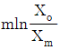
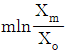
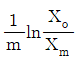
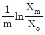
(정답률: 알수없음)
48. 그림과 같은 스프링-질량계의 경우, 등가 스프링 정수는?
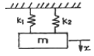
- k1+k2
- k1k2
- (k1+k2)/k1k2
- k1k2/(k1+k2)
(정답률: 알수없음)
49. 감쇠가 계에서 갖는 기능으로 거리가 먼 것은?
- 공진시에 진동 진폭을 감소시킨다.
- 충격시의 진동을 감소시킨다.
- 기초로의 진동에너지 전달을 감소시킨다.
- 복원력을 상승시켜 진동을 감소시킨다.
(정답률: 알수없음)
50. 다음 중 고체음의 소음저감 대책으로 거리가 먼 것은?
- 가진력 억체
- 방사면 축소 및 제진처리
- 공명방지
- 밸브의 다단화
(정답률: 알수없음)
51. 바닥 면적이 4m×5m인 방의 진향실법에서 의한 평균흡음률이 0.3이고 잔향시간이 0.48sec이었다면 이 방의 높이는?
- 약 3.4m
- 약 5.2m
- 약 7.4m
- 약 9.2m
(정답률: 알수없음)
52. 금속스프링에 대한 설명으로 거리가 먼 것은?
- 내고온, 저온 및 기타 내노화성 등에 취약한 편이므로 넓은 환경조건에서는 안정된 스프링 특성의 유지가 어렵다.
- 일반적으로 부착이 용이하고, 내구성이 좋으며 보수가 거의 불필요하다.
- 자동차의 현가스프링에 이용되는 중판스트링과 같이 스프링장치에 구조부분의 일부 역할을 겸하여 할 수 있다.
- 금속 내부의 마찰은 대단히 작아 증판스프링이나 조합접시스프링과 같이 구조상 마찰을 가진 경우를 제외하고는 감쇠기를 병용할 필요가 있다.
(정답률: 알수없음)
53. 방음벽 설계 시 유의사항으로 거리가 먼 것은?
- 음원의 지향성이 수음측 방향으로 클 때에는 벽에 의한 감쇠치가 계산치보다 작게 된다.
- 벽이 투과손실은 회절감쇠치보다 적어도 5dB 이상 크게 하는 것이 바람직하다.
- 벽의 길이는 선음원일 때 음원과 수음점간의 직선거리의 2배 이상으로 하는 것이 바람직하다.
- 방음벽에 의한 삽입손실치는 실제로는 5~15dB 정도이다.
(정답률: 알수없음)
54. 질량 m인 추를 스프링상수 k인 스프링에 매달았을 때의고유 진동수를 fo라 하면 스프링상수 k인 스프링 2개를 병렬로 하여 질량 4m의 추를 매달았을 때의 고유진동수의 변화는?
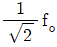
- fo
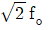
- 2fo
(정답률: 알수없음)
55. 방진고무로 지지한 진동계의 고유진동수가 8.3Hz일 때 이 방진고무의 정적수축량은?
- 0.26cm
- 0.36cm
- 0.66cm
- 0.88cm
(정답률: 알수없음)
56. 차음재료의 선정과 사용시 유의점을 설명한 내용으로 옳지 않은 것은?
- 차음에서 가장 영향이 큰 것은 틈이기 때문에 틈이나 찢어진 곳은 보수하고 이음매는 메꾸어야 한다.
- 콘크리트 블록을 차음벽으로 이용하는 경우는 표면을 몰타르 등으로 마감하는 것이 좋다.
- 벽면의 진동 등을 차음벽에 영향을 미치지 않으므로 방진, 제진 등의 처리가 불필요하다.
- 큰 차음효과를 기대할 경우에는 차음벽의 내부에 다공질 재료 등을 끼운 2중벽을 고려한다.
(정답률: 알수없음)
57. 소음기에 관한 설명으로 거리가 먼 것은?
- 간섭형 소음기는 고음역의 탁월주파수 성분에 유효하다.
- 간섭형 소음기의 최대 투과손실치는 f(Hz)의 홀수배 주파수에서 일어나 이론적으로 무한대가 되나, 실용적으로는 20dB 내외이다.
- 취출구 소음기에서 소음기의 출구 구경은 유속을 저하시키기 위해 반드시 입구보다 크게 하여야 한다.
- 팽창형 소음기에서 감음주파수는 팽창부의 길이에 따라 결정된다.
(정답률: 알수없음)
58. 다음 중 방진대책에 사용되는 방진재료와 유효 고유진동수(Hz)의 연결로 거리가 가장 먼 것은?
- 금속 코일스프링-4Hz 이하
- 방진고무-4Hz 이상
- 콜크-40Hz 이상
- 펠트-4Hz 이하
(정답률: 알수없음)
59. 단일 벽면에 일정 주파수의 순음이 난입사한다. 이 벽의 면밀도가 원래의 2배가 되고, 입사 주파수는 원래의 1/2로 변화될 때 투과손실의 변화량은?
- 변화없음
- 3dB 증가
- 3dB 감가
- 5dB 증가
(정답률: 알수없음)
60. 점성감쇠가 있는 1자유도계에 임계감쇠란 감쇠비가 어떤 값을 갖는가?
- 0
- 1
- √2
- 1/√2
(정답률: 알수없음)
4과목: 소음진동방지기술
61. 환경정책기본법령상 아래 조건의 소음 환경기준(LeqdB(A))으로 옳은 것은?
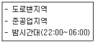
- 60
- 65
- 70
- 75
(정답률: 알수없음)
62. 소음진동관리법규상 생활소음의 규제기준 중 아침시간대의 기준으로 옳은 것은?
- ⑤:00~07:00
- ⑤:00~08:00
- 06:00~09:00
- 06:00~08:00
(정답률: 알수없음)
63. 소음진동관리법상 환경기술인을 임명하지 아니한 자에 대한 과태료 부과기준은?
- 600만원 이하의 과태료
- 300만원 이하의 과태료
- 200만원 이하의 과태료
- 100만원 이하의 과태료
(정답률: 알수없음)
64. 소음진동관리법규상 생활소음 규제기준 중 공사장의 소음규제기준 보정기준으로 옳은 것은? (단, 작업시간은 특정공사의 사전신고대상 기계ㆍ장비를 사용하는 시간이다.)
- 야간 작업시간이 1일 3시간 이하일 때 +5dB을 규제기준치에 보정한다.
- 주간 작업시간이 1일 3시간 이하일 때 +10dB을 규제기준치에 보정한다.
- 주ㆍ야간 작업시간이 관계없이 1일 3시간 이하일 때 +10dB을, 3시간 초과시 +5dB을 규제기준치에 보정한다.
- 주간 작업시간이 1일 3시간 초과 6시간 이하일 때 +5dB을 구제기준치에 보정한다.
(정답률: 알수없음)
65. 소음진동관리법령상 인증을 면제할 수 있는 자동차에 해당하지 않는 것은?
- 여행자 등이 다시 반출할 것을 조건으로 일시 반입하는 자동차
- 항공기 지상조업용(地上操業用)으로 반입하는 자동차
- 자동차제작자ㆍ연구기관 등이 자동차의 개발이나 전시 등을 목적으로 사용하는 자동차
- 군용ㆍ소방용 및 경호 업무용 등 국가의 특수한 공무용으로 사용하기 위한 자동차
(정답률: 알수없음)
66. 소음진동관리법규상 학교ㆍ병원ㆍ공공도서관 및 업소규모 100명 이상의 노인의료복지시설ㆍ영유아보육시설의 부지 경계선으로부터 50미터 이내 지역의 도로교통소음의 관리기준(LeqdB))의 한도로 옳은 것은? (단, 야간시간대)
- 58
- 60
- 63
- 65
(정답률: 알수없음)
67. 환경정책기본법령상 도시지역 중 상업지역의 낮(06:00~22:00)과 밤(22:00~06:00)의 소음환경기준(Leq dB(A))으로 옳은 것은? (단, 일반지역 기준)
- 낮:50, 밤:40
- 낮:55, 밤:45
- 낮:65, 밤:55
- 낮:70, 밤:65
(정답률: 알수없음)
68. 소음진동관리법규상 소음발생건설기계의 소음도 표지의 규격(크기) 기준은?
- 100mm×100mm
- 80mm×80mm
- 70mm×70mm
- 40mm×40mm
(정답률: 알수없음)
69. 소음진동관리법상 이 법에서 사용하는 용어의 뜻으로 옳지 않은 것은?
- “소음(騷音)”이란 기계ㆍ기구ㆍ시설, 그 밖의 물체의 사용 또는 공동주택 등 환경부령으로 정하는 장소에서 사람의 활동으로 인하여 발생하는 강한 소리를 말한다.
- “진동(振動)”이란 기계ㆍ기구ㆍ시설, 그 밖의 물체의 사용으로 인하여 발생하는 강한 흔들림을 말한다.
- “소음발생건설기계”란 건설공사에 사용하는 기계 중 소음이 발생하는 기계로서 국토교통부령으로 정하는 것을 말한다.
- “교통기관”이란 기차ㆍ자동차ㆍ전차ㆍ도로 및 철도 등을 말한다. 다만, 항공기와 선박은 제외한다.
(정답률: 알수없음)
70. 다음은 소음진동관리법규상 환경관리인의 교육기관에 관한 사항이다. ()안에 가장 적합한 것은?
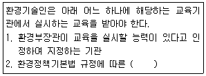
- 국립환경과학원
- 환경보전협회
- 한국환경공단
- 환경공무원연수원
(정답률: 알수없음)
71. 소음진동관리법규상 소음도 검사기관과 관련한 행정처분기준 중 “고의 또는 중대한 과실로 소음도 검사를 부실하게 한 경우” 1차-2차-3차 행정처분기준으로 옳은 것은?
- 영업정지1개월-영업정지3개월-지정취소
- 업무정지5일-경고-등록취소
- 경고-경고-지정취소
- 개선명령-경고-지정취소
(정답률: 알수없음)
72. 다음은 소음진동관리법규상 환경기술인을 두어야 할 사업장 및 그 자격기준에 관한 사항이다. ()안에 알맞은 것ㅇ느?
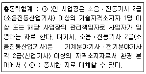
- ㉠ 3,750kW, ㉡ 1년 이상
- ㉠ 3,750kW, ㉡ 2년 이상
- ㉠ 1,250kW, ㉡ 1년 이상
- ㉠ 1,250kW, ㉡ 2년 이상
(정답률: 알수없음)
73. 다음은 소음진동관리법규상 소음배출시설에 해당하지 않은 것은? (단, 대수기준시설 및 기계ㆍ기구)
- 4대 이상의 시멘트벽돌 및 블록의 제조기계
- 100대 이상의 공업용 재봉기
- 2대 이상의 공업용 재봉기
- 20대 이상의 직기(평기 포함)
(정답률: 알수없음)
74. 다음은 소음진동관리법령상 항공기 소음의 한도에 관한 사항이다. ()안에 알맞은 것은?
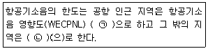
- ㉠ 70, ㉡ 80
- ㉠ 80, ㉡ 90
- ㉠ 80, ㉡ 70
- ㉠ 90, ㉡ 75
(정답률: 알수없음)
75. 소음진동관리법규상 특정공사의 사전신고 대상 기계ㆍ장비의 종류에 해당되지 않는 것은?
- 항타항발기(압입식 항타항발기는 제외한다.)
- 덤프트럭
- 공기압축기(공기토출량이 분당 2.83세제곱미터 이상의 이동식인 것으로 한정한다.)
- 발전기
(정답률: 알수없음)
76. 소음진동관리법규상 소음도 표지의 색상기준으로 옳은 것은?
- 노란색판에 검은색 문자
- 초록색판에 검은색 문자
- 흰색판에 검은색 문자
- 회색판에 검은색 문자
(정답률: 알수없음)
77. 소음진동관리법규상 소형 스용차의 소음허용기준으로 옳은 것은? (단, 2006년 1월 1일 이후에 제작되는 자동차 기준이며, 가속주행소음의 “나”의 규정은 직접분사식(DI) 디젤원동기를 장착한 자동차에 대하여 적용하고, “가”의 규정은 그 밖의 자동차에 대하여 적용한다.)
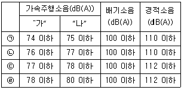
- ㉠
- ㉡
- ㉢
- ㉣
(정답률: 알수없음)
78. 소음진동관리법규상 배출시설 및 방지시설 등과 관련된 행정처분기준 중 조업 중인 공장에서 배출되는 소음ㆍ진동의 정도가 배출허용기준을 초과하여 개선명령을 받은 자가 이를 이행하지 아니한 경우의 1차 행정처분기준으로 옳은 것은?
- 허가취소
- 조업정지
- 경고
- 폐쇄명령
(정답률: 알수없음)
79. 소음진동관리법규상 교육기관의 장이 다음해의 교육계획을 환경부장관에게 제출하여 승인을 받아야 하는 기간기준 ( ㉠ )과 환경기술인의 교육기관기준 ( ㉡ )으로 옳은 것은? (단, 규정에 의한 교육기관에 한하고, 정보통신매체를 이용하여 원격 교육을 실시하는 경우는 제외한다.)
- ㉠ 매년 11월 30일, ㉡ 5일 이내
- ㉠ 매년 11월 30일, ㉡ 7일 이내
- ㉠ 매년 12월 31일, ㉡ 5일 이내
- ㉠ 매년 12월 31일, ㉡ 7일 이내
(정답률: 알수없음)
80. 소음진동관리법규상 생활진동의 규제기준치는 생활진동의 영향이 미치는 대상 지역기준으로 하여 적용하는데 발파진동의 경우 보정기준으로 옳은 것은?
- 주간에만 규제기준치에 +5dB을 보정한다.
- 주간에만 규제기준치에 +10dB을 보정한다.
- 주간에는 규제기준치에 +5dB을, 야간에는 +10dB을 보정한다.
- 주간에는 규제기준치에 +10dB을, 야간에는 +5dB을 보정한다.
(정답률: 알수없음)